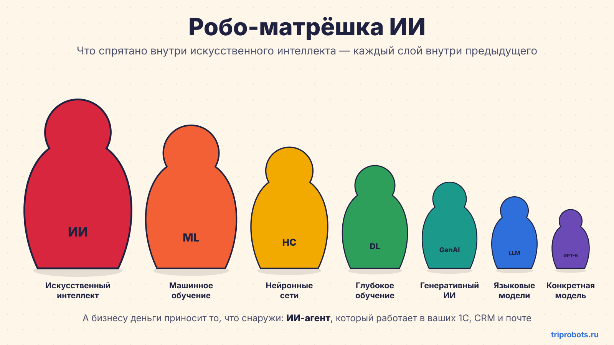
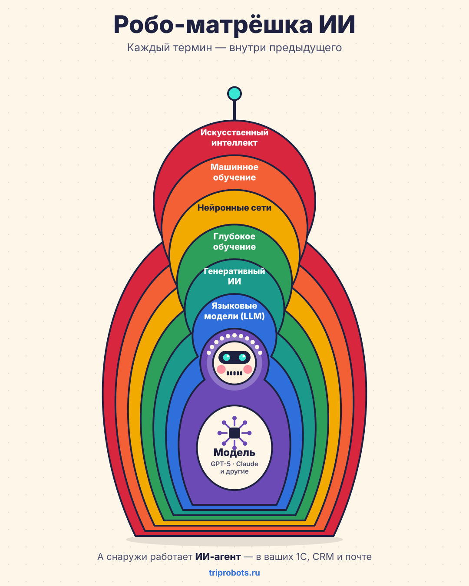

Коротко: что есть что
Если нужен ответ за минуту, логика такая: ИИ — самое широкое понятие; машинное обучение — один из способов создавать ИИ; нейросети — один из методов машинного обучения; LLM — языковые генеративные модели; ChatGPT — продукт вокруг модели; ИИ-агент — модель, которая получила доступ к инструментам и может выполнять работу.
Что такое LLM?
Большая языковая модель, обученная работать с текстом. Она понимает запросы на обычном языке, анализирует и создаёт текст.
GPT и ChatGPT — одно и то же?
Нет. GPT — модель или семейство моделей. ChatGPT — приложение, через которое человек взаимодействует с моделями.
Что такое ИИ-агент?
Модель + цель + правила + доступ к программам. Агент может не только отвечать, но и выполнить действие.
Что такое MCP?
Открытый протокол для контролируемого подключения ИИ к данным и инструментам — например CRM, базе документов или внутреннему сервису.
Матрёшка терминов

Чаты и агенты — не слои этой матрёшки, а способы использовать модель.

Каждый слой простыми словами
| Термин | Что это | Пример в бизнесе |
|---|---|---|
| Искусственный интеллект (ИИ) | Любая программа, которая делает то, что раньше требовало человеческого ума. Самое широкое понятие. | Антиспам-фильтр, автопилот, чат-бот. |
| Машинное обучение (ML) | Программа не по жёстким правилам, а учится на примерах и находит закономерности сама. | Прогноз продаж по истории, оценка риска оттока клиента. |
| Нейронные сети | Один из способов машинного обучения: много простых элементов, соединённых по образцу нейронов мозга. | Распознавание сканов накладных и речи в звонках. |
| Глубокое обучение | Нейросети со многими слоями, обученные на огромных объёмах данных. Именно оно дало рывок последних 10 лет. | Переводчики, распознавание лиц, голосовые помощники. |
| Генеративный ИИ | Модели, которые не только распознают, но и создают новое: текст, картинки, голос, видео, код. | Описания товаров, баннеры, черновики писем. |
| Большая языковая модель (LLM) | Генеративная модель, обученная на текстах. Понимает запросы на обычном языке и отвечает как человек. | Сводка договора, ответ клиенту, анализ переписки. |
| Конкретная модель | Именная LLM от конкретной компании. Модели регулярно выходят в новых версиях. | GPT-5, Claude, Gemini, GigaChat, открытые модели на своём сервере. |
| Продукт (чат) | Приложение, через которое человек общается с моделью. Не сама модель, а «оболочка» вокруг неё. | ChatGPT, приложение Claude, GigaChat. |
Следующий слой: ИИ-агенты и MCP
Матрёшка заканчивается на модели, но для бизнеса самое интересное начинается дальше. Чат отвечает на вопросы. Агент — выполняет задачи.
ИИ-агент = языковая модель + доступ к вашим программам + цель + правила. Он не просто говорит «посмотрите остаток в 1С», а сам смотрит остаток, готовит предложение и записывает сделку в CRM. Подробнее о том, как такой контур внедряется в компании, — в материале «Как TRIPROBOTS внедряет ИИ-агентов».
| Чат (ChatGPT и аналоги) | ИИ-агент | |
|---|---|---|
| Кто запускает | Человек пишет вопрос | Событие: новое письмо, заявка, расписание |
| Что знает | То, что вы вставили в чат | Ваши данные в 1С, CRM, почте и других системах |
| Результат | Текст, который нужно куда-то скопировать | Сделанное действие: запись, ответ, задача |
| Контроль | Человек делает всё сам | Права доступа, подтверждение важных шагов, журнал |
MCP (Model Context Protocol) — это «розетка», через которую агент подключается к вашим системам. Открытый стандарт, как USB-C: один раз сделали подключение к CRM — и им может пользоваться любая совместимая модель.
- интеграция ИИ с вашими программами становится быстрее и дешевле;
- вы не привязаны к одному поставщику ИИ: модель можно сменить, а подключения останутся.
Частые вопросы
Что такое LLM простыми словами?
LLM — большая языковая модель, обученная на больших объёмах текста. Она работает с естественным языком: может анализировать, суммировать, классифицировать и генерировать текст.
Чем нейросеть отличается от искусственного интеллекта?
Искусственный интеллект — широкое понятие. Нейронные сети — один из методов машинного обучения внутри этого понятия. Поэтому не всякий ИИ является нейросетью.
Чем GPT отличается от ChatGPT?
GPT — семейство языковых моделей. ChatGPT — продукт и интерфейс, через который человек взаимодействует с моделями. Модель — это двигатель, чат — приложение вокруг него.
Что такое ИИ-агент?
ИИ-агент — модель, которой дали цель, правила и доступ к нужным системам. В отличие от обычного чата, агент может не только отвечать, но и выполнять действия в CRM, 1С, почте и других программах.
Что такое MCP?
MCP, или Model Context Protocol, — открытый протокол, через который совместимые ИИ-модели и агенты получают контролируемый доступ к внешним данным и инструментам.
Что из этого нужно руководителю
Разбираться в архитектурах не нужно. Достаточно задавать поставщикам пять вопросов:
- Это чат или агент? Чат помогает людям, агент забирает часть работы. Это разные деньги и разный эффект.
- Какая модель внутри и можно ли её сменить? Модели обновляются каждые несколько месяцев. Решение не должно умирать вместе с версией.
- К каким нашим системам подключается и с какими правами? Чем меньше лишних доступов, тем безопаснее.
- Где хранятся и куда передаются наши данные? Ответ нужен до старта, а не после.
- Как измерим результат? Время, деньги, ошибки — цифры «до» и «после» фиксируются заранее.
Главное
- ИИ — не магия и не один продукт, а набор слоёв.
- Для бизнеса ценность появляется не от названия модели, а от того, как она встроена в процесс.
- Деньги приносит агент, который работает внутри ваших программ и делает рутину за людей.
Какую задачу можно отдать агенту?
Разберём один процесс, оценим потенциальную экономику и покажем, какие данные и интеграции для этого нужны.
Обсудить процесс